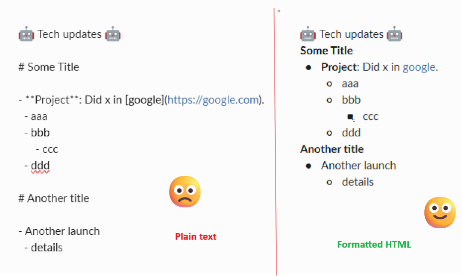

The Living Deadline
About
The Living Deadline
Categories
All
(10)
airflow
(1)
code
(1)
data-science
(1)
devops
(2)
engineering
(3)
genai
(1)
productivity
(2)
talks
(1)
troubleshooting
(1)

Stop Reformatting Markdown When Pasting into Slack
productivity
Slack only pastes rich formatting when the clipboard advertises
text/html
, otherwise it treats everything as plain text.
Jan 16, 2026
Alex Guglielmone Nemi
Fix: pip hangs in WSL (IPv6 / gai.conf)
troubleshooting
pip install
hangs in WSL with no useful error, often after it starts fetching from
files.pythonhosted.org
.
Jan 13, 2026
Alex Guglielmone Nemi
Talks: Toward a Shared Vision for LLM Evaluation in the Airflow Ecosystem
Airflow Summit 2025 - Lightning Talk (5 min)
airflow
talks
As LLM tools and agents emerge in the Airflow community, whether as plugins, MCP servers, or embedded agents, we lack a consistent way to benchmark across implementations…
Sep 9, 2025
Alex Guglielmone Nemi
Using Data Build Tool (dbt) to Accelerate & Scale Science
data-science
engineering
This post is part of a series: “Factory of Domain Experts”:
Sep 1, 2025
Alex Guglielmone Nemi
Use aider for free with your local LLMs or cheaply with OpenRouter
genai
code
Many people use LLM (Large Language Models) services to code at work but don’t necessarily see a path to use them at home on a budget.
Jul 6, 2025
Alex Guglielmone Nemi
Merge and Forget
engineering
After your change is approved and enters the delivery pipeline, you should be able to
forget it
.
May 18, 2024
Alex Guglielmone Nemi
No News Is Good News
engineering
Do
not
check whether things are fine.
May 17, 2024
Alex Guglielmone Nemi
Set a Meeting Budget
productivity
Too many recurring meetings drain your week’s productivity.
Mar 1, 2023
Alex Guglielmone Nemi
Get notifications in ubuntu when command line tasks end
devops
Often, when working in the terminal, you’ll find yourself running a command that takes a non-trivial amount of time and you don’t want to just stare at the screen until it…
Apr 16, 2019
Alex Guglielmone Nemi
Accept a self-signed certificate with git
devops
Some time ago I came into an issue where people served git repositories in a local network using apache but used a self-signed certificate for the server.
Feb 11, 2018
Alex Guglielmone Nemi
No matching items